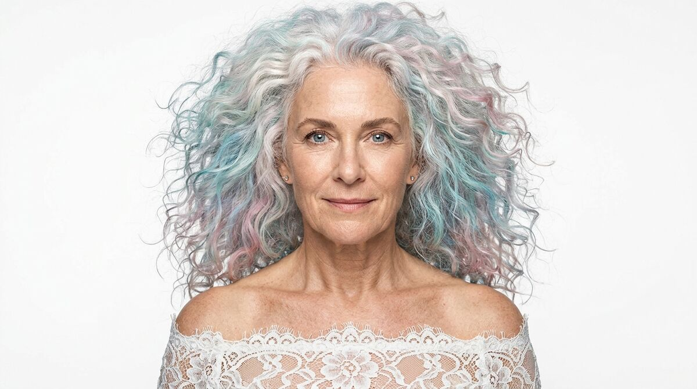

Studio character
Ultra-photorealistic studio portrait of [describe character], shot with a 105mm lens, Hasselblad H6D-100c. Centered, forward-facing bust shot on a seamless white background. Clamshell lighting via a top beauty dish and bottom reflector creates luminous skin with visible micro-pores, fine downy hair, and sharp circular catchlights in the eyes. Every surface, from the organic skin texture to the coarse fabric fibers, is rendered with hyper-tactile detail. The entire head, hair, and shoulders are fully contained within the frame. The lighting minimizes shadows, emphasizing a direct, grounded gaze and the physical weight of the attire against the form.